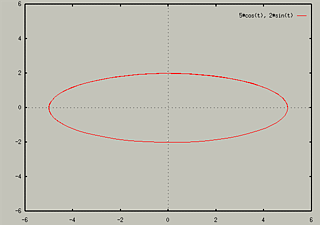
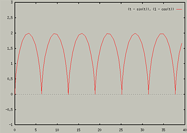
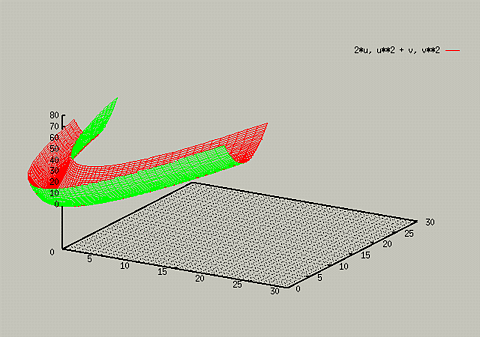

Parametric Equations
GnuPlot includes support for Parametric Equations. To switch to
parametric mode, type the following:
To go back to standard Cartesian mode, type:
For example, to see the plot of the set of equations x = 5 cos t
and y = 2 sin t, you could type the following:
- set parametric
- set xrange [-6:6]
- set yrange [-6:6]
- set trange[0:10]
- set isosamples 60
- plot 5*cos(t), 2*sin(t)

The xrange and yrange values specify the range of the graph
displayed. The set trange command sets the range that is used
to compute the parametric equations. If you use brackets to set a
range within the plot command, it will refer to the trange.
The first part of the plot command before the comma is the x
equation, and the second part is the y equation.
For another example, consider trying to plot the cycloid x = t -
sin t and y = 1 - cos t.
- set xrange [0:40]
- set yrange[-1:3]
- set trange [0:40]
- plot t-sin(t), 1-cos(t)

3D Parametric Plots
Gnuplot also supports 3D parametric plots. It uses the the variables
u and v. 3D paramettric plots use the xrange, yrange,
and zrange values to determine what is displayed on the screen. The
urange and vrange variables can be changed to determine
how much of the graph is drawn. For example,:
- set xrange [0:30]
- set yrange [0:30]
- set zrange [0:80]
- set grid
- splot 2*u, u**2 + v, v**2

If you changed the urange and vrange parameters, you
would get a differant graph.
- set vrange [-10:10] - this makes the graph taller
- set urange [-7:7] - this makes the graph extend further
- set isosamples 80
- replot

Many of the standard 3D features apply to 3D parameter plots (you
can use isosamples, views, and hidden3d).
Table of Contents - Previous - Changing Perspectives - Next - Polar Plots
College of Natural Sciences /
University of Northern Iowa /
manager@cns.uni.edu
Copyright © 1996 College of Natural Sciences. All Rights Reserved.
Last Modified: 11/4/96